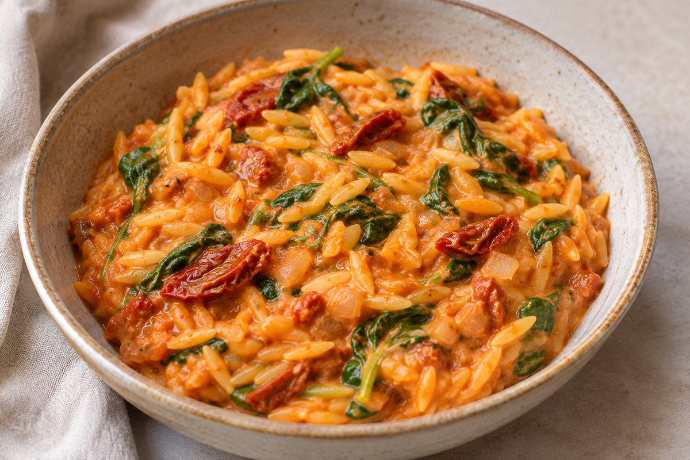

Cremige One-Pot-Orzo mit getrockneten Tomaten und Babyspinat

Cremige Orzo-Nudeln aus einem Topf mit eingelegten, getrockneten Tomaten, Sahne und Babyspinat.
Zutaten
- 1 Zwiebel
- Olivenöl zum Anbraten
- Tomatenmark
- 5–6 eingelegte, getrocknete Tomaten
- 200 g Orzo (ca. 1 Tasse)
- 500 ml Gemüsebrühe (alternativ Wasser und Gemüsebouillon)
- 100–150 ml Sahne
- Frischer Babyspinat
- Salz und Pfeffer
Zubereitung
- Zwiebel würfeln und in etwas Olivenöl glasig anbraten.
- Tomatenmark hinzufügen und kurz mitrösten.
- Die eingelegten, getrockneten Tomaten klein würfeln, dazugeben und kurz mit anbraten.
- Orzo hinzufügen, gut umrühren und mit der Gemüsebrühe aufgießen.
- Bei mittlerer Hitze unter gelegentlichem Rühren köcheln lassen, bis der Orzo gar ist.
- Sahne hinzufügen und kurz mitköcheln lassen.
- Herd ausschalten, Babyspinat unterheben und zusammenfallen lassen.
- Mit Salz und Pfeffer abschmecken.
Angaben der Quelle: Mengen für Olivenöl, Tomatenmark und Babyspinat sind nicht spezifiziert. Portionszahl sowie Vorbereitungs-, Koch- und Gesamtzeit sind nicht angegeben.
Originalquelle: Instagram-Reel. Rezepttext nach der vom Nutzer bereitgestellten Abschrift.